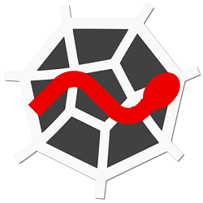

Metode Decision-Tree
Decision Tree¶
PENGERTIAN¶
Decision tree adalah salah satu metode klasifikasi yang paling populer, karena mudah untuk diinterpretasi oleh manusia. Decision tree adalah model prediksi menggunakan struktur pohon atau struktur berhirarki. Konsep dari pohon keputusan adalah mengubah data menjadi decision tree dan aturan-aturan keputusan.
"Manfaat utama" dari penggunaan decision tree adalah kemampuannya untuk mem-break down proses pengambilan keputusan yang kompleks menjadi lebih simple, sehingga pengambil keputusan akan lebih menginterpretasikan solusi dari permasalahan.
Nama lain dari decision tree adalah CART (Classification and Regression Tree). Dimana metode ini merupakan gabungan dari dua jenis pohon, yaitu classification tree dan juga regression tree. Untuk memudahkan, berikut ilustrasi dari keduanya.

Gambar. Classfication Tree
Untuk gambar diatas merupakan contoh dari classification tree, sedangkan gambar dibawah merupakan contoh dari regression tree.

Gambar. Regression Tree
Decision tree juga berguna untuk mengeksplorasi data, menemukan hubungan tersembunyi antara sejumlah calon variabel input dengan sebuah variabel target. Decision tree memadukan antara eksplorasi data dan pemodelan, sehingga sangat bagus sebagai langkah awal dalam proses pemodelan bahkan ketika dijadikan sebagai model akhir dari beberapa teknik lain.
Dalam beberapa aplikasi, akurasi dari sebuah klasifikasi atau prediksi adalah satu-satunya hal yang ditonjolkan dalam metode ini, misalnya sebuah perusahaan direct mail membuat sebuah model yang akurat untuk memprediksi anggota mana yang berpotensi untuk merespon permintaan, tanpa memperhatikan bagaimana atau mengapa model tersebut bekerja.

Gambar. Decision Tree atau CART
Kelebihan lain dari metode ini adalah mampu mengeliminasi perhitungan atau data-data yang kiranya tidak diperlukan. Sebab, sampel yang ada biasanya hanya diuji berdasarkan kriteria atau kelas tertentu saja.
Meski memiliki banyak kelebihan, namun bukan berarti metode ini tidak memiliki kekurangan. Decision tree ini bisa terjadi overlap, terutama ketika kelas dan kriteria yang digunakan sangat banyak tentu saja dapat meningkatkan waktu pengambilan keputusan sesuai dengan jumlah memori yang dibutuhkan.
Dalam hal akumulasi, decision tree juga seringkali mengalami kendala eror terutama dalam jumlah besar. Selain itu, terdapat pula kesulitan dalam mendesain decision tree yang optimal. Apalagi mengingat kualitas keputusan yang didapatkan dari metode decision tree sangat tergantung pada bagaimana pohon tersebut didesain.
Terlepas dari kekurangan dan kelebihan dari decision tree, metode ini banyak digunakan lebih lanjut dalam berbagai pengolahan data. Mulai dari data mining dan juga machine learning. Dalam dunia kerja, decision tree sendiri sangat berguna untuk penilaian credit scoring. Jika anda pernah mengajukan kredit yang diproses secara instan, nah anda sudah mempunyai pengalaman dari decision tree.
A. Kelebihan & Kekurangan Pohon Keputusan atau Decision Tree :¶
- Kelebihan
Metode pohon keputusan mempunyai beberapa kelebihan, diantaranya sebagai berikut :
- Daerah pengambilan keputusan yang sebelumnya kompleks dan sangat global, dapat diubah menjadi simple dan spesifik.
- Eliminasi perhitungan-perhitungan yang tidak diperlukan, karena ketika menggunakan metode pohon keputusan maka contoh diuji hanya berdasarkan kriteria atau kelas-kelas tertentu.
- Fleksibel untuk memilih fitur dari internal node yang berbeda, fitur yang terpilih akan membedakan suatu kriteria dibandingkan kriteria yang lain dalam node yang sama.
-
Metode pohon keputusan dapat menghindari munculnya permasalahan ini dengan menggunakan kriteria yang jumlahnya lebih sedikit pada setiap node internal tanpa banyak mengurangi kualitas keputusan yang dihasilkan.
-
Kekurangan
Selain kelebihan dari pohon keputusan, terdapat juga beberapa kekurangan dari pohon keputusan, diantaranya sebagai berikut :
- Terjadi overlap terutama ketika kelas-kelas dan kriteria yang digunakan jumlahnya sangat banyak. Hal tersebut juga dapat menyebabkan meningkatnya waktu pengambilan keputusan dan jumlah memori yang diperlukan.
- Pengakumulasian jumlah eror dari setiap tingkat dalam sebuah pohon keputusan yang besar.
- Kesulitan dalam mendesain pohon keputusan yang optimal
- Hasil kualitas keputusan yang didapatkan dari metode pohon keputusan sangat tergantung pada bagaimana pohon tersebut didesain.
B. Arsitektur Pohon Keputusan¶
Arsitektur pohon keputusan dibuat menyerupai bentuk pohon, dimana pada umumnya sebuah pohon terdapat akar (root), cabang dan daun (leaf). Pada pohon keputusan juga terdiri dari tiga bagian sebagai berikut :
a. Root node atau node akar merupakan node yang terletak paling atas dari suatu pohon.
b. Internal Node ini merupakan node percabangan, dimana pada node ini hanya terdapat satu input dan mempunyai minimal dua output.
c. Leaf Node ini merupakan node akhir, hanya memiliki satu input, dan tidak memiliki output. Pada pohon keputusan setiap leaf node menandai label kelas.
Pada pohon keputusan di setiap percabangan menyatakan kondisi yang harus dipenuhi dan tiap ujung pohon menyatakan nilai kelas data. Gambar berikut merupakan bentuk arsitektur pohon keputusan.
Gambar. Arsitektur Pohon Keputusan
C. Langkah-Langkah Konstruksi Pohon Keputusan dengan Algoritma¶
Adapun langkah-langkah dalam konstruksi pohon keputusan adalah sebagai berikut :
Langkah 1 : Pohon dimulai dengan sebuah simpul yang mereperesentasikan sampel data pelatihan yaitu dengan membuat simpul akar.
Langkah 2 : Jika semua sampel berada dalam kelas yang sama, maka simpul ini menjadi daun dan dilabeli menjadi kelas. Jika tidak, information gain akan digunakan untuk memilih atribut terbaik dalam memisahkan data sampel menjadi kelas-kelas individu.
Langkah 3 : Cabang akan dibuat untuk setiap nilai pada atribut dan data sampel akan dipartisi lagi.
Langkah 4 : Algoritma ini menggunakan proses rekursif untuk membentuk pohon keputusan pada setiap data partisi. Jika sebuah atribut sduah digunakan disebuah simpul, maka atribut ini tidak akan digunakan lagi di simpul anak-anaknya.
Langkah 5 : Proses ini berhenti jika dicapai kondisi seperti berikut :
– Semua sampel pada simpul berada di dalam satu kelas
– Tidak ada atribut lainnya yang dapat digunakan untuk mempartisi sampel lebih lanjut. Dalam hal ini akan diterapkan suara terbanyak. Ini berarti mengubah sebuah simpul menjadi daun dan melabelinya dnegan kelas pada suara terbanyak.
IMPLEMENTASI PROGAM DECISION TREE¶
Di sini, untuk pengimplementasian program saya menggunakan data berupa bikes datasets. Selain data, pengimplementasian membutuhkan software untuk melakukan, pengcodingan program dan di sini saya menggunakan software spyder yang terkoneksi di dalam software anaconda. Alasan saya memilih software spyder, karena pada software spyder yang berada di dalam anaconda, librarynya telah terinstall semua. Tidak seperti pycharm yang harus menginstall librarynya secara manual terlebih dahulu.
- ANACONDA¶

- SPYDER¶

"LANGKAH - LANGKAH CODING"
- Pertama
Lakukan pengimportan library dari python seperti :
- Pandas -> Untuk memuat sebuah file ke dalam tabel virtual seperti spreadsheet.
import pandas as pd
bikes = pd.read_csv('bikes.csv')
bikes.head()Penjelasan :
Coding di atas berfungsi untuk memanggil datasests bikes. Dan juga menampilkannya dari perbaris dan kolom. Gambar di bawah adalah hasil output program di atas.
" Output "¶
- Kedua
*Lakukan pengimportan pyplot dari library matplotlib
from matplotlib import pyplot as plt
plt.figure(figsize=(8,6))
plt.plot(bikes['temperature'], bikes['count'], 'o')
plt.xlabel('temperature')
plt.ylabel('bikes')
plt.show()Penjelasan :
Codingan di atas berfungsi untuk, membuat visualisasi berbentuk gambar. Dan bentuk gambar tersaji sesuai, codingan apa yang anda masukkan. Bisa berbentuk grafik maupun yang lain. Dan banyak data, tersaji sesuai dengan plot yang anda masukkan dalam coding anda. Jadi visualisasi data tergantung dari plot yang anda pilih dari range berapa sampai berapanya. Gambar di bawah, merupakan hasil dari visualisasi coding di atas.
" Output "
- Ketiga
*Lakukan pengimportan DecisionTreeRegressor dari sklearn tree dan juga pengimportan numpy.
from sklearn.tree import DecisionTreeRegressor
import numpy as np
regressor = DecisionTreeRegressor(max_depth=2)
regressor.fit(np.array([bikes['temperature']]).T, bikes['count'])Penjelasan :
Codingan di atas berfungsi untuk mengetahui kualitas split data, dari rata - rata kesalahan data yang ada. Dan gambar di bawah merupakan output dari codingan di atas.
" Output "

- Keempat
xx = np.array([np.linspace(-5, 40, 100)]).T
plt.figure(figsize=(8,6))
plt.plot(bikes['temperature'], bikes['count'], 'o', label='observation')
plt.plot(xx, regressor.predict(xx), linewidth=4, alpha=.7, label='prediction')
plt.xlabel('temperature')
plt.ylabel('bikes')
plt.legend()
plt.show()Penjelasan :
Codingan di atas berfungsi untuk, membuat visualisasi berbentuk gambar, yang menjelaskan tentang observasi dari data dan juga prediksi data dari decusion tress. Gambar di bawah ,merupakan ouputan dari coding di atas.
" Output "
- Kelima
*Lakukan pengimportan library pydot
import pydot
!dot -Tpng tree.dot > tree.png
from IPython.display import Image
Image(filename='tree.png')Penjelasan :
Codingan di atas berfungsi untuk megubah file .dot menjadi png. Jadinya dapat memunculkan gambar decission tree, seperti outputan gambar di bawah dari pemrosesan codingan di atas.